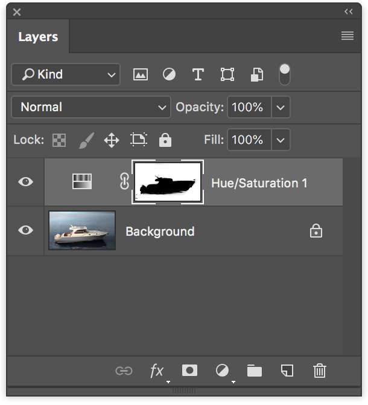
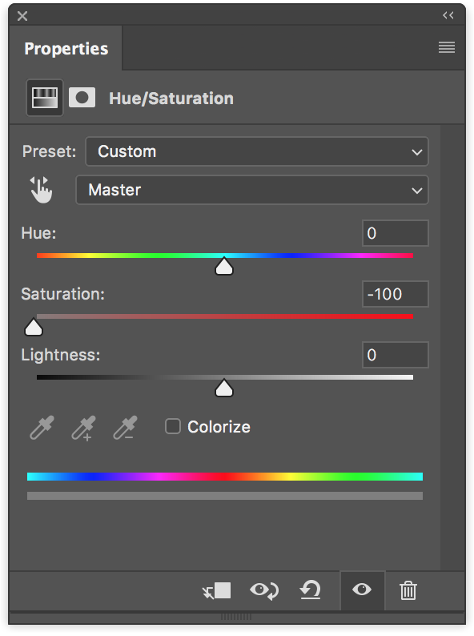
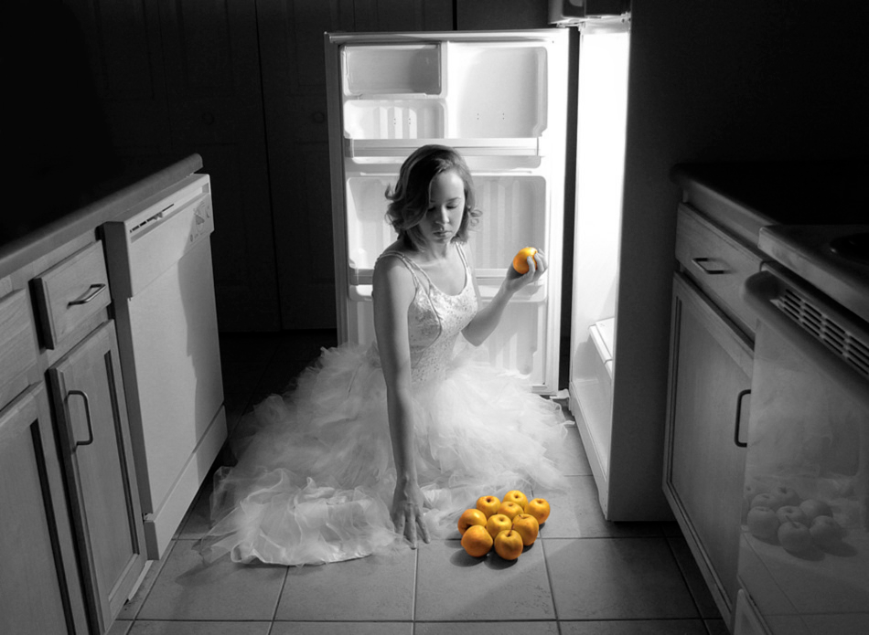
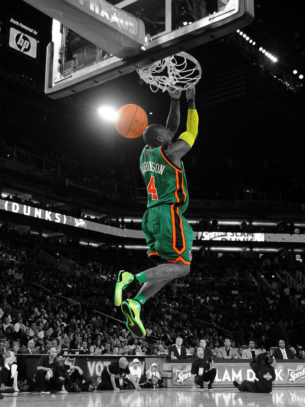
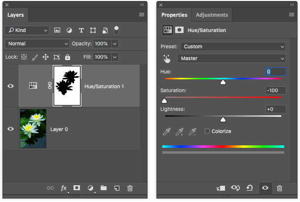
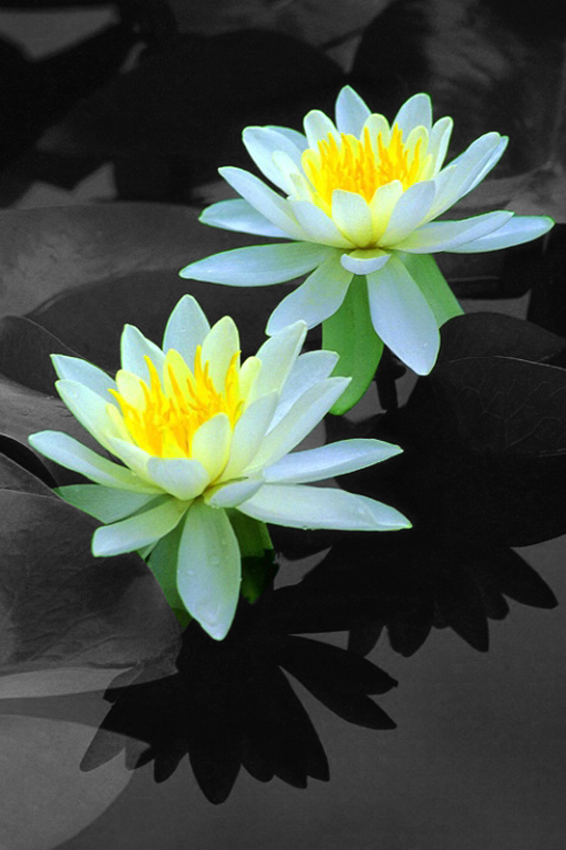

Choose an image bigger than 1600 pixels in both width and height.
Use a masked Hue/Saturation adjustment layer to make it a grayscale image with one or few areas or objects highlighted with color.
Your Photoshop Layer palette should look somewhat like this:

On the adjustment layer property, adjust the saturation to -100.

Don’t flatten the image. (Keep the layers on the file.)
Save it as PSD and submit it to PolyLearn.
Meet the exercise criteria: 40%
Technique and Execution: 30%
Challenge: 20%
Aesthetic: 10%

Felicia Hans, Autumn 2010, Ohio State

Antonio Mazza, Autumn 2010, Ohio State

Thuan Nguyen, Autumn 2010, Ohio State

Thuan Nguyen, Autumn 2010, Ohio State